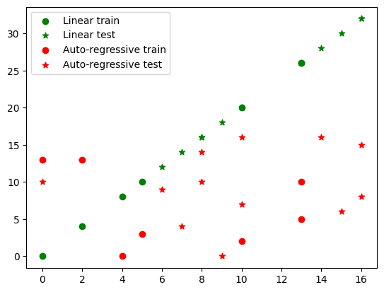
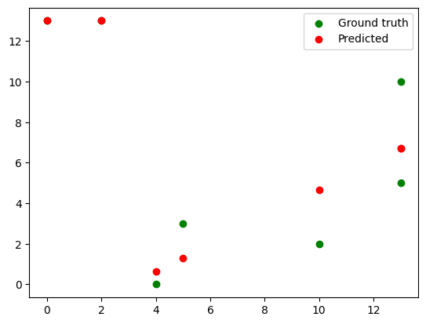
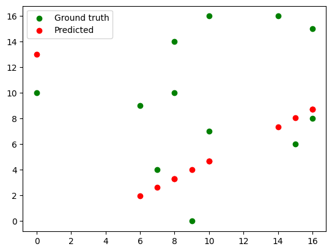
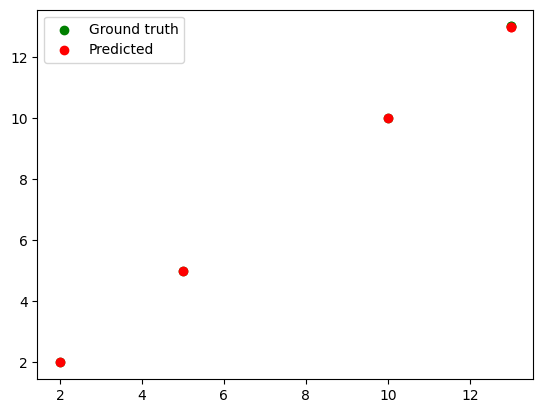
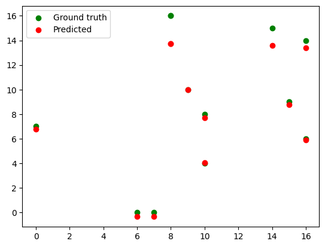
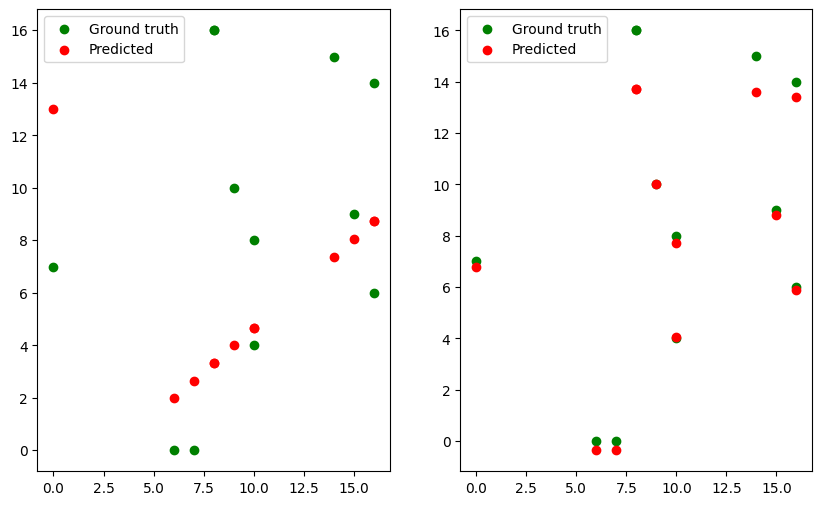

import torch
from torch import nn
import matplotlib.pyplot as plt
import numpy as np
data = torch.arange(n)
np.random.choice(data, n)array([ 4, 13, 11, 1, 13, 5, 14, 14, 13, 17, 4, 4, 7, 17, 1, 12, 0,
7, 11, 6])n = 20
data = torch.arange(n)
data = torch.tensor(np.random.choice(data, n)).view(-1,1).float()
x = data[1:]
yLin = x * 2
yAR = [(data[i-1]) for i in range(1, n)]
yAR = torch.tensor(yAR).view(-1,1).float()
x_train = x[:7]
x_test = x[7:]
yLin_train = yLin[:7]
yLin_test = yLin[7:]
yAR_train = yAR[:7]
yAR_test = yAR[7:]
plt.scatter(x_train, yLin_train, color='green', label='Linear train')
plt.scatter(x_test, yLin_test, color='green', label='Linear test', marker='*')
plt.scatter(x_train, yAR_train, color='red', label='Auto-regressive train')
plt.scatter(x_test, yAR_test, color='red', label='Auto-regressive test', marker='*')
plt.legend()<matplotlib.legend.Legend at 0x7afea3039d50>
x, yAR(tensor([[ 5.],
[13.],
[ 2.],
[10.],
[13.],
[ 0.],
[ 4.],
[ 7.],
[10.],
[ 0.],
[ 9.],
[ 6.],
[15.],
[16.],
[14.],
[ 8.],
[16.],
[10.],
[ 8.]]),
tensor([[ 3.],
[ 5.],
[13.],
[ 2.],
[10.],
[13.],
[ 0.],
[ 4.],
[ 7.],
[10.],
[ 0.],
[ 9.],
[ 6.],
[15.],
[16.],
[14.],
[ 8.],
[16.],
[10.]]))class LinearModel(nn.Module):
def __init__(self, ):
super(LinearModel, self).__init__()
self.fc = nn.Linear(1, 1)
def forward(self, x):
out = self.fc(x)
return outlinmodel = LinearModel()
out = linmodel(x_train)
outtensor([[-2.0616],
[-6.6569],
[-0.3384],
[-4.9337],
[-6.6569],
[ 0.8104],
[-1.4872]], grad_fn=<AddmmBackward0>)linmodel.fc.weightParameter containing:
tensor([[-0.5744]], requires_grad=True)optimizer = torch.optim.SGD(linmodel.parameters(), lr=0.01)
loss_fn = nn.MSELoss()
for e in range(10):
out = linmodel(x_train)
loss = loss_fn(out, yLin_train)
loss.backward()
optimizer.step()
optimizer.zero_grad()
print(f'w: {linmodel.fc.weight.detach().item():.2f}, loss: {loss.detach().item():.2f}')w: 2.87, loss: 429.94
w: 1.52, loss: 66.77
w: 2.05, loss: 10.63
w: 1.84, loss: 1.95
w: 1.92, loss: 0.61
w: 1.89, loss: 0.40
w: 1.91, loss: 0.36
w: 1.90, loss: 0.35
w: 1.90, loss: 0.34
w: 1.90, loss: 0.34yLin_train, out(tensor([[10.],
[26.],
[ 4.],
[20.],
[26.],
[ 0.],
[ 8.]]),
tensor([[10.5082],
[25.7389],
[ 4.7966],
[20.0274],
[25.7389],
[ 0.9889],
[ 8.6043]], grad_fn=<AddmmBackward0>))Train on AR data
linmodel = LinearModel()
out = linmodel(x_train)
outtensor([[3.3852],
[8.7801],
[1.3621],
[6.7570],
[8.7801],
[0.0134],
[2.7108]], grad_fn=<AddmmBackward0>)linmodel.fc.weightParameter containing:
tensor([[0.6744]], requires_grad=True)optimizer = torch.optim.SGD(linmodel.parameters(), lr=0.01)
loss_fn = nn.MSELoss()
for e in range(10000):
out = linmodel(x_train)
loss = loss_fn(out, yAR_train)
loss.backward()
optimizer.step()
optimizer.zero_grad()
if e%1000==0: print(f'w: {linmodel.fc.weight.detach().item():.2f}, loss: {loss.detach().item():.2f}')w: 0.11, loss: 29.03
w: -0.32, loss: 22.43
w: -0.32, loss: 22.43
w: -0.32, loss: 22.43
w: -0.32, loss: 22.43
w: -0.32, loss: 22.43
w: -0.32, loss: 22.43
w: -0.32, loss: 22.43
w: -0.32, loss: 22.43
w: -0.32, loss: 22.43test set performance
with torch.no_grad():
out = linmodel(x_test)
out, yAR_test(tensor([[6.4812],
[5.5341],
[8.6911],
[5.8498],
[6.7969],
[3.9557],
[3.6400],
[4.2714],
[6.1655],
[3.6400],
[5.5341],
[6.1655]]),
tensor([[ 4.],
[ 7.],
[10.],
[ 0.],
[ 9.],
[ 6.],
[15.],
[16.],
[14.],
[ 8.],
[16.],
[10.]]))plt.scatter(x_test, yAR_test, color='green', label='Ground truth')
plt.scatter(x_test, out, color='red', label='Predicted')
plt.legend()<matplotlib.legend.Legend at 0x7afea2dd9720>
class LinearModel(nn.Module):
def __init__(self, ):
super(LinearModel, self).__init__()
self.fc1 = nn.Linear(1, 10)
self.relu = nn.ReLU()
self.fc2 = nn.Linear(10, 1)
def forward(self, x):
x = self.fc1(x)
x = self.relu(x)
out = self.fc2(x)
return outlinmodel = LinearModel()
optimizer = torch.optim.SGD(linmodel.parameters(), lr=0.01)
loss_fn = nn.MSELoss()
for e in range(10000):
out = linmodel(x_train)
loss = loss_fn(out, yAR_train)
loss.backward()
optimizer.step()
optimizer.zero_grad()
if e%1000==0: print(f'loss: {loss.detach().item():.2f}')loss: 58.04
loss: 3.58
loss: 3.46
loss: 3.46
loss: 3.46
loss: 3.46
loss: 3.46
loss: 3.46
loss: 3.46
loss: 3.46with torch.no_grad():
out = linmodel(x_train)
out, yAR_train(tensor([[ 1.2973],
[ 6.7027],
[13.0000],
[ 4.6757],
[ 6.7027],
[13.0000],
[ 0.6216]]),
tensor([[ 3.],
[ 5.],
[13.],
[ 2.],
[10.],
[13.],
[ 0.]]))plt.scatter(x_train, yAR_train, color='green', label='Ground truth')
plt.scatter(x_train, out, color='red', label='Predicted')
plt.legend()<matplotlib.legend.Legend at 0x7afea2647700>
with torch.no_grad():
out_testlin = linmodel(x_test)
out_testlin, yAR_test(tensor([[ 2.6487],
[ 4.6757],
[13.0000],
[ 4.0000],
[ 1.9730],
[ 8.0540],
[ 8.7297],
[ 7.3784],
[ 3.3243],
[ 8.7297],
[ 4.6757],
[ 3.3243]]),
tensor([[ 4.],
[ 7.],
[10.],
[ 0.],
[ 9.],
[ 6.],
[15.],
[16.],
[14.],
[ 8.],
[16.],
[10.]]))plt.scatter(x_test, yAR_test, color='green', label='Ground truth')
plt.scatter(x_test, out, color='red', label='Predicted')
plt.legend()<matplotlib.legend.Legend at 0x7afea3837670>
class SequenceModel(nn.Module):
def __init__(self, ):
super(SequenceModel, self).__init__()
self.hidden_size = 10
self.sequence_length = 2
self.rnn = nn.RNN(1, hidden_size=self.hidden_size, batch_first=True)
# self.fc = nn.Linear(self.hidden_size * self.sequence_length, 1)
self.fc = nn.Linear(self.hidden_size, 1)
def forward(self, x):
out, _ = self.rnn(x)
# out.shape: [bs, seq_length, hidden_size]
out = self.fc(out[:, -2, :])
# out = self.fc(out.contiguous().view(x.shape[0], self.sequence_length * self.hidden_size))
return outseq_length = 2
x_seq = []
y_seq = []
for i in range(x.shape[0]-seq_length):
x_seq.append(x[i:i+seq_length])
y_seq.append(yAR[i+seq_length-1])
x_seq = torch.stack(x_seq)
y_seq = torch.stack(y_seq)
x_seq.shape, y_seq.shape(torch.Size([17, 2, 1]), torch.Size([17, 1]))x_seq[2], y_seq[2](tensor([[ 2.],
[10.]]),
tensor([2.]))x_seq_train = x_seq[:5]
x_seq_test = x_seq[5:]
y_seq_train = y_seq[:5]
y_seq_test = y_seq[5:]seq_model = SequenceModel()
optimizer = torch.optim.SGD(seq_model.parameters(), lr=0.01)
for e in range(10000):
out = seq_model(x_seq_train)
loss = loss_fn(out, y_seq_train)
loss.backward()
optimizer.step()
optimizer.zero_grad()
if e%1000==0: print(f'loss: {loss.detach().item():.2f}')loss: 72.52
loss: 0.32
loss: 0.19
loss: 0.08
loss: 0.02
loss: 0.00
loss: 0.00
loss: 0.00
loss: 0.00
loss: 0.00with torch.no_grad():
out = seq_model(x_seq_train)
out, y_seq_train(tensor([[ 4.9995],
[12.9988],
[ 1.9998],
[ 9.9979],
[12.9988]]),
tensor([[ 5.],
[13.],
[ 2.],
[10.],
[13.]]))seq_model.rnn.weight_ih_l0.shape, seq_model.rnn.weight_hh_l0.shape(torch.Size([10, 1]), torch.Size([10, 10]))plt.scatter(x_train[:-2], y_seq_train, color='green', label='Ground truth')
plt.scatter(x_train[:-2], out, color='red', label='Predicted')
plt.legend()<matplotlib.legend.Legend at 0x7afea1eecf40>
with torch.no_grad():
out_testRNN = seq_model(x_seq_test)
out_testRNN, y_seq_test(tensor([[-0.3538],
[ 4.0694],
[ 6.7783],
[ 9.9979],
[-0.3538],
[ 8.7896],
[ 5.8890],
[13.6075],
[13.7195],
[13.3962],
[ 7.7244],
[13.7195]]),
tensor([[ 0.],
[ 4.],
[ 7.],
[10.],
[ 0.],
[ 9.],
[ 6.],
[15.],
[16.],
[14.],
[ 8.],
[16.]]))plt.scatter(x_test, y_seq_test, color='green', label='Ground truth')
plt.scatter(x_test, out_testRNN, color='red', label='Predicted')
plt.legend()<matplotlib.legend.Legend at 0x7afea1a1a380>
fig, axes = plt.subplots(1,2, figsize=(10, 6))
for ax, output in zip(axes.flat, [out_testlin, out_testRNN]):
ax.scatter(x_test, y_seq_test, color='green', label='Ground truth')
ax.scatter(x_test, output, color='red', label='Predicted')
ax.legend()